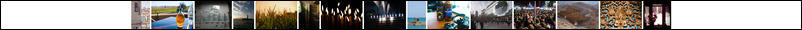

Three Coasts: Year Two

Last year I made a poster using all the pictures from the first year of Three Coasts. So this year I decided to do it again, but with all the pictures from the second year. To make this year's poster I used many of the same tools and techniques from I used before (getting the data and pictures from Tumblr's API, converting the images to a standard size with ImageMagick, printing with Short Run Posters) which was convenient, but I still didn't get the poster done in July like I had planned (it's now October).
So, as with the page I made last year about the first poster, this page will show you most of what went into making this year's poster.
The Images
This year we had 215 pictures posted to three coasts. Here is a breakdown of their widths and heights:
| count | width | height |
|---|---|---|
| 33 | 1280 | 848 |
| 33 | 1000 | 664 |
| 29 | 848 | 1280 |
| 28 | 1280 | 857 |
| 15 | 600 | 800 |
| 13 | 612 | 612 |
| 12 | 857 | 1280 |
| 11 | 800 | 600 |
| 7 | 664 | 1000 |
| 6 | 598 | 800 |
| 4 | 1280 | 852 |
| 4 | 1000 | 562 |
| 3 | 852 | 1280 |
| 3 | 599 | 800 |
| 2 | 1280 | 960 |
| 2 | 960 | 1280 |
| 2 | 800 | 598 |
| 2 | 480 | 640 |
| 1 | 1000 | 750 |
| 1 | 1000 | 563 |
| 1 | 984 | 1280 |
| 1 | 855 | 1280 |
| 1 | 800 | 599 |
| 1 | 800 | 193 |
The Design
Initially I was going to make a poster very similar to last year's, with everything arranged in a grid, but that didn't seem interesting enough. I am not sure where the idea came from, but I began to think it would be interesting to create a series of concentric circles with all of our pictures. I think the final image looks close to what I thought it would look like when I started, which is good.
Plan One
When I began to think about how to make the circles, my first thought was that I would have to distort each image individually, then place them all together like a puzzle to make something fit. This did not sound fun, or likely to produce a good result, but it did lead me to my eventual solution. I had planned on writing something in java to stretch the top of an image, shrink the bottom of that image, and then bend it a little bit so it looked like it should be sitting on the outside of a circle. Without really investigating what it would take to code up a method to do this myself, I started to look at the different distortion operations that ImageMagick can do. When I found ImageMagick's arc distortion method, my plan changed to writing a script that would distort each image with ImageMagick, and then write something else to arrange the distorted images. This is one of the images from the past year.
And after running this code
convert sample1.jpg -virtual-pixel White -distort Arc 60 sample1-arc.jpg
It ends up looking like this:
But, as you can see from the table above, there are lots of different image dimensions. So how do I make a determination about how much to distort each image size? Then, how do I account for different images needing to be distorted different amounts based on which circle they're in? Images in circles closer to the center will need to have more arc than images in outer circles.
Plan Two
Eventually this line of thinking brought me to the center of the circle where I imagined one image would need to be wrapped around and connect back to itself. I chose an image at random
and set the Arc size to 360 in the following command
convert center1.jpg -virtual-pixel White -distort Arc 360 center1-arc.jpg
To get this result:
That looks pretty cool, but very distorted. Looking at the table above, you can see that there is one image which is much wider than it is tall, image 1306041706.jpg, which is 800 pixels wide by 193 pixels tall.
Running that through the same code results in this:
Then something clicked and I realized that if I put a bunch of images together in a line, then took that line of images and distorted it to be an arc, I wouldn't have to work with each image individually. In order for the line of images to look right, all the images needed to be the same height, so I used the same script as last year to resize everything to 800 pixels high. This made some images smaller than they were originally, and upscaled anything that was less than 800 pixels tall. And, like last year, dealing with lots of somewhat large images is taxing and time consuming, so I also made a batch of images that were just 200 pixels high to test out different ideas.
So, to put the following three images into a line
I used the following ImageMagick command
convert \( image1.jpg image2.jpg image3.jpg \) -background White -gravity Center +append montage1.jpg
which ends up looking like this
I then ran that through the arc distortion command to get this
That looks good, but is still pretty distorted, particularly in the wheel in the third image, so I added a few more images to make the curve a little less severe.
convert \( image1.jpg image2.jpg image3.jpg image4.jpg image5.jpg image6.jpg image7.jpg image8.jpg image9.jpg \) \
-background White -gravity Center +append montage2.jpg
Then I wanted to add some space between each of the images so that they have a little border. Once again, ImageMagick has a way to do that in the form of the -splice argument to the convert command. By adding -splice 10x0+0+0 to the command to make the montage results in this:
convert \( image1.jpg image2.jpg image3.jpg image4.jpg image5.jpg image6.jpg image7.jpg image8.jpg image9.jpg \) \
-background White -splice 10x0+0+0 -gravity Center +append montage3.jpg
I think that looks better, but the way the white lines between images get more narrow as they approach the center is still apparent.
So then the plan became to make a bunch of circles and superimpose them on one another. Not surprisingly, ImageMagick has a tool for that called composite. To test this out, I took the following steps:
- Create a linear montage for the outer circle
- Turn that montage into a circle
- Create a linear montage for the inner circle
- Turn that montage into another circle
- Overlay the smaller circle on the larger circle
The code looks like this:
convert \( image1.jpg image2.jpg image3.jpg image4.jpg image5.jpg image6.jpg image7.jpg image8.jpg image9.jpg \) \
-background White -splice 10x0+0+0 -gravity Center +append montage4.jpg
convert montage4.jpg -virtual-pixel White -distort Arc 360 montage4-arc.jpg
convert \( image10.jpg image11.jpg image12.jpg image13.jpg \) \
-background White -splice 10x0+0+0 -gravity Center +append montage5.jpg
convert montage5.jpg -virtual-pixel White -distort Arc 360 montage5-arc.jpg
composite montage5-arc.jpg -gravity Center montage4-arc.jpg -background White composite1.jpg
And results in the following image:
And then I remembered that jpg images do not have transparencies. But png images do. So I changed the output of the arc distortion commands from jpg to png, changed the -virtual-pixel flag from White to Transparent, and added the -alpha flag .
convert montage4.jpg -alpha Set -virtual-pixel Transparent -distort Arc 360 montage4-arc.png
convert montage5.jpg -alpha Set -virtual-pixel Transparent -distort Arc 360 montage5-arc.png
composite montage5-arc.png -gravity Center montage4-arc.png -background White composite2.png
Then the composite command results in this:
It occurs to me just now as I write this (and I wish I'd thought of this while I was doing the project for reasons that will become apparent later), but I might have been able to use ImageMagick's masking capabilities to achieve the same goal. Maybe next time.
The Knapsack Problem
Now the white areas around the smaller circle are gone, but the smaller circle doesn't completely fit inside the larger circle. And this is where the bulk of my time went on this project. How can I arrange the source images in linear montages in just the right way so that when those linear montages are bent into circles they all line up nicely spaced out?
When I create a linear montage I know the dimensions of the constituent images, as well as how much space is spliced between them. For instance, this image (click to see it at full size)
{kind=link}
is composed of nine images which have the following dimensions
| image | width | height |
|---|---|---|
| image1.jpg | 150 | 200 |
| image2.jpg | 301 | 200 |
| image3.jpg | 299 | 200 |
| image4.jpg | 301 | 200 |
| image5.jpg | 134 | 200 |
| image6.jpg | 267 | 200 |
| image7.jpg | 299 | 200 |
| image8.jpg | 133 | 200 |
| image9.jpg | 301 | 200 |
| sum | 2185 | - |
These nine images also have 10 pixels of white space between them so the total width of the montage should be $ 2185 + ( 9 x 10 ) = 2275 $ pixels wide. Since the top of the image will be the outside of the circle, and we know the width of the image, we know what the circumference of the circle will be. In this case $ C = 2275 $. Using the formula for the circumference of a circle, $ C = 2 \pi r = \pi d$ we can find the diameter $ d $ of the circle:
\[\begin{aligned} C & = 2275 \\ C & = \pi d \\ \pi d & = 2275 \\ d & = \frac{2275}{\pi} \\ d & = 724.16 \end{aligned}\]
Because the image of circle created by ImageMagick is square and there is no padding between the outer edge of the circle and the edge of the image, the diameter of the circle should also be the width of the image. So the width of this image should be 724ish pixels: (again, click on the image to see the full size version)
{kind=link}
However, running ImageMagick's identify command on the image shows:
$ identify montage3-arc-full.png
montage3-arc-full.png PNG 926x926 926x926+4294966833+4294966833 8-bit DirectClass 1.163MB 0.000u 0:00.000
The image is actually 926 images wide, not 724.
This didn't make sense. I tried again with different images and each time got a circle that was wider than I expected. But after a few times, I began to notice that no matter how wide the original linear montage was, the width of the circle was always about 200 pixels wider than the math suggests it should be. It took longer than I'd like to admit to realize that 200 pixels is the height of the images making up the linear montage. When I made a circle from a linear montage that was 300 pixels high, the circle was about 300 pixels larger than expected.
I finally realized that when ImageMagick makes an arc, it distorts the image by making the top part wider than it was originally, the bottom part narrower, and it tries to keep the middle the same. So I drew a red line down the middle and measured some pixels:
composite -blend 50 montage3-full.jpg -size 2275x200 xc:white \
-alpha Set montage3-full-lightened.jpg
convert montage3-full-lightened.jpg \
-draw "font-size 60 fill black text 1025, 90 'C = 2275'" \
-strokewidth 5 \
-stroke Red -draw "line 0, 100 2275, 100" \
-virtual-pixel White -distort Arc 360 \
-stroke Red -draw "line 0, 463 100, 463" \
-stroke Green -draw "line 100, 463 826, 463" \
-stroke Red -draw "line 826, 463 926, 463" \
-strokewidth 0 -stroke Black \
-draw "font-size 40 fill black text -60, -10 'd = 726'" \
-draw "font-size 40 fill black text -450, -10 '100'" \
-draw "font-size 40 fill black text 375, -10 '100'" \
montage3-arc-lightened-annotations-full.jpg
{kind=link}
The computed diameter is the green line in the middle of the resulting image, the extra parts on the edge in red, and the actual diameter is the computed diameter added to the image height. So given a set of images, I can compute (without actually running them through ImageMagick) the diameter of the circle they will create, and this means that I start to try to find sets of images that will look nice together when turned into circles and overlaid on top of each other.
But going the other way is more difficult. There's no straightforward way to create a circle with a specific diameter. It's not hard to group pictures together, and then compute the diameter of the circle they would create, and then compare how close that is to the desired diameter, but there's no good way to optimize this process. It's similar to the the knapsack problem:
Given a set of items, each with a weight and a value, determine the count of each item to include in a collection so that the total weight is less than or equal to a given limit and the total value is as large as possible. It derives its name from the problem faced by someone who is constrained by a fixed-size knapsack and must fill it with the most useful items.
So in order to find the groups of images that will create the desired concentric circles, I wrote a php script that follows a pretty much brute force algorithm for finding groupings of images.
The pieces of data that are important to this algorithm are:
- the height of all the images
- the widths of each image
- the desired diameter of the outermost circle
- the threshold for equality when considering circle diameters
- the padding between images
- the padding between circles
And the algorithm itself is
- load image data from all images
- create empty list of images
- add image to list
- compute diameter of circle that would be created from list of images
- $ sum of image widths + ( image padding \times number of images ) $
- if diameter is equal to desired diameter of circle, within a threshold
- create circle
- compute diameter of next circle
- $ current diameter - ( 2 \times image height ) - circle padding $
- remove images in this circle from consideration for future circles
- go to step 2
- if diameter is less than desired diameter
- go to step 3.
- if diameter is greater than desired diameter
- return images to list of all images
- go to step 2
The output of this script is a make (batch) file which consists of a bunch of ImageMagick calls to:
- turn a few images into a montage
- turn that montage into a circle
- superimpose that circle over other previously created circles.
The first few times I ran this on a limited set of images I would get something like this, which was very encouraging:
or like this
So then I bumped it up to more and more images and started getting this as the output:
And this was what I thought my original goal was going to be. I had envisioned a dartboard type of image, with concentric circles that went all the way down to the center of the image. But I didn't like how distorted the center looked:
So set the diameter of the outermost circle to be a few image heights larger than before and got this:
I think that looks much better. The smaller circles aren't as distorted, and I like how the whitespace in the middle looks.
As you can see the inter-circle spacing in those trials wasn't very consistent, which is because I hadn't set the threshold low enough. I was afraid the program would take forever to find a good fit and while I was trying to make everything work I gave it a 10 pixel threshold. Thankfully, when I brought that threshold down to 1 pixel on either side of the desired width, it only took a little longer to find groupings that worked.
At one point I thought there might be duplicate images in some of the circles, so to find them I had the build script only print out each image that was added to the circle and none of the ImageMagick commands. Then using the sort, uniq and wc commands I could figure out what was going on.
Running this command would show how many images were being added to the circles in total:
$ wc -l images.txt
And this command would show how many different images were being added:
$ sort images.txt | uniq | wc -l
If the output of those two commands is different, then there are some images which are being used more than once. Initially there were some images being used more than once because I wasn't removing them from the pool of available images once they'd been added to a circle. Once that was sorted out the two commands above showed that images were being used only once, but it also revealed that not all the images were being used. There were 215 images available to use, but only 206, or 198, or 211 were being used (depending on how wide I set the diameter of the outermost circle). When I looked back over the way images were being added to circles, I realized that when the last (innermost) circle is being made, if the images that are available for it would not make a circle big enough to be close to the next innermost circle, they would just be dropped. So in the case where there were 206 images used, the remaining 9 images would have made a circle much smaller than the previous circle, and so they were not used at all. If they had been, it would have looked something like this:
In order then to make use of all the images, the inner most circle would most likely be incomplete. To make those images look like they belong, I had to add some whitespace to either end like this

so that when it was distorted into a circle, it the images would be at the top like this
Small Issues and Lots of RAM
So once I got all this together, I started playing around with different widths to see what looked good. The script looks for the largest circle first and fills in smaller circles as it goes. The makefile it would output would construct the final image in the same way, first creating the largest circle, then the next largest, overlaying them and moving on. This means that every time an image was overlaid, it involved the largest possible image. With six circles, the largest of which being 12000 pixels wide, this meant six overlay operations where at least one image was around 12000 pixels wide. This is a taxing operation and goes slowly. But, if the image construction is done in the opposite order, from the inside out, then the overlay operations start small and only involve the largest image in the last operation. Switching to an inside out final image construction sped up the process considerably.
The next thing I noticed is the vertical line at the bottom of the concentric circles:
Because each circle is made from a linear montage, and ImageMagick wraps the left end around to touch the right end, having them meet at the bottom of the circle, and because I had an equal amount of spacing between all the images, all these circles had the same spacing aligned at their bottom.
In order to get rid of this line, I rotated each circle a random amount individually before combining them all into the final image. ImageMagick provides two methods for doing this. The first is the -rotate flag, and the second is the SRT Distort method. I began by using the -rotate flag and that worked fine for the smaller circles 1000 or 2000 pixels across, but after that, it would take forever. So I switched to the SRT method, and that had similar performance problems. I found this out when I did a test run on images that were 400 pixels high. I created the makefile, went to dinner, and came back three hours later to find ImageMagick still chugging away.
Looking at Activity Monitor showed that only about 4% of the processor was being used, but that there were only 8mb of of available RAM left. I quit the convert process and all of a sudden 2.2GB of RAM was freed. So I looked over all the images that had been created, and found that everything in the makefile had been executed except for the final image rotation and composition. Commenting out all that other stuff I ran the makefile again and watched in Activity Monitor as all the available RAM was consumed in about two minutes while the processor was barely being hit.
I don't understand how ImageMagick (or Preview.app for that matter) manages memory or represents an image in memory. Opening a 33MB jpg in Preview takes up roughly 75MB of RAM. Opening a 50MB png in Preview takes up roughly 275MB of RAM. On one of ImageMagick's example pages it says that in order to rotate, there have to be three copies of the image in memory. Once real RAM is all used up, ImageMagick moves to virtual memory on disk, which is several orders of magnitude slower, and I'm guessing this is where the problem is.
ImageMagick has a -monitor flag which will display a little bit of information about what's happening in the form of number of tasks completed out of number of total tasks to complete. Using the -monitor flag on the rotate operation that kept hanging, while monitoring free RAM in Activity Monitor, showed that things were chugging along quite quickly until all the RAM was gone. Then it slowed down to one operation every few seconds. When the rotation operation blasts from 1/9012 to 2144/9000 tasks completed in about a minute, and then takes 5 seconds to get to 2145/9000, and then another 5 seconds to get to 2146/9000, it's going to take about 10 hours to finish, if everything is linear.
So I needed a new way to rotate images. I settled on a method which rotates the images before they are turned into circles, which looks like this:
- create linear montage
- find width of montage
- select random point in montage
- split montage into left and right parts
- recombine right side of right part to left side of left part
This like if the right side of the montage was attached to the left side and you could drag in either direction horizontally and anything that moved past one edge would reappear on the other. Like how the asteroids move around in Asteroids (except that Asteroids wraps vertically as well as horizontally).
So this montage
is split into two parts, the left

and the right
Notice how the fourth image from the right in the unsplit montage, the picture of ginger cake, is cut in half between the right side of the left image and the left side of the right image. Then when the sides are swapped and recombined it looks like this:
Here you can see that the picture of the cake is now split into two parts on the outside. When this is turned into a circle it looks like this, with the cake at the bottom instead of a vertical white line:
Once that was all sorted out the last thing to do was make a full sized set of circles and add the title. Short Run Posters accepts images that are 17 x 23 inches at 800dpi, which is 13600 x 18400 pixels. I wanted the outside circle to get close to the edge of the maximum width, but not all the way. I played around with various values for the width of the outer circle and the size of the images (400, 600, 750 and 800 pixels) and the one that seemed to work the best was width of 12300 pixels with 600 pixel high images. That's what created the final image.
The title and an old technique
I like how last year's poster had "Three Coasts" in big letters and "Year One" in smaller italic letters, so I wanted to do that again. Given that I'd been playing around so much with ImageMagick, I thought I'd use some of its text generation capabilities to draw the words and append them to the top of the circle. The font I used last year is called Baskerville and has both regular and italic typefaces. The italic glyphs aren't just slanted regular glyphs, they look completely different.
So I had ImageMagick draw "THREE COASTS":
$ convert -background White -fill Black -font 'Baskerville-Regular' -size 400 label:'THREE COASTS' three-coasts-title.jpg
which looks like this:
And then I tried to have it draw "Year Two" in the italic font like this:
$ convert -background White -fill Black -font "Baskerville-Italic" -size 100 label:'Year Two' three-coasts-year-two.jpg
which came out like this:
And that's not right. The italic version looks like this:
No amount of fiddling with ImageMagick's -font or -style or other text related flags would get the right output. So I did what I did last year. I created an html document with the text I wanted styled the way I wanted it and had webkit2png turn it into an image. This is the web page:
<!DOCTYPE html PUBLIC "-//W3C//DTD HTML 4.01//EN">
<html>
<head>
<title>Three Coasts - Year Two</title>
<style type="text/css">
.box { margin-bottom:35px }
h1 {
font-family: Baskerville, Palatino, Georgia, serif;
text-transform: uppercase;
font-size: 600px;
font-weight: 100;
padding : 0px
margin-bottom : 133px
}
h2 {
font-family: Baskerville, Palatino, Georgia, serif;
font-size: 333px;
font-style: italic;
font-weight: 100;
padding: 0px;
margin-top: -500px;
margin-bottom: 1380px;
}
#header { text-align:center }
#wrapper { margin-left:100px }
body {
width:13600px;
margin:0px;
padding:0px;
}
</style>
</head>
<body>
<div id="header">
<h1>Three Coasts</h1>
<h2>Year Two</h2>
</div>
</body>
</html>
And webkit2png outputs a 13600 x 2746 png that looks like this:
Putting it all together
The final image size should be 13600 x 18400 pixels. The circles made an image that was 12470 x 12470. The title was 13600 x 2746. I had 15216 pixels of vertical space, and I needed another 3184. So I created some thin whitespace for the top and bottom:
$ convert -size 10x1000 canvas:White top.jpg
$ convert -size 10x2184 canvas:White bottom.jpg
and put it all together like this
$ convert -background White \( top.jpg tcyt-title-full.png ../trial/final.jpg bottom.jpg \) -gravity Center -append tcyt-labeled.jpg
To make this 13600 x 18400 pixel image:
Conclusion
I like how it came out. I like how both my picture with Niv and Fisch's picture with Niv are at the top of the second and fourth circles. That happened randomly with the circle rotation, I did not plan that. I like the way the colors mix, and I like that while each image is distorted slightly, it's not too distorted.
I already have some ideas for next year's poster too.
Colophon
This document was written up using markdown. I used MathJax for the math, which displays LaTeX formulas in browsers.